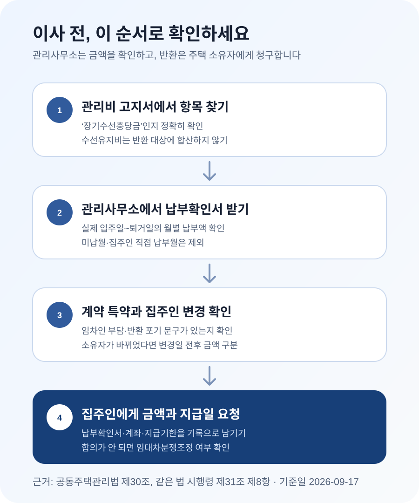

전세·월세 세입자가 낸 장기수선충당금, 이사할 때 돌려받을 수 있을까?
전세·월세 세입자가 관리비와 함께 장기수선충당금을 대신 냈다면, 별도로 부담하기로 한 특약이 없는 한 이사할 때 주택 소유자에게 그 금액의 반환을 청구할 수 있습니다. 관리사무소가 세입자에게 현금을 돌려주는 구조는 아닙니다. 관리사무소에서 입주일부터 퇴거일까지의 납부확인서를 발급받고, 계약서의 특약과 소유자 변경 여부를 확인한 뒤 집주인에게 정산을 요청하세요.
장기수선충당금은 아파트의 큰 수리를 위해 집주인이 모으는 돈입니다
관리비 고지서를 보면 매달 몇 천원에서 몇 만원씩 ‘장기수선충당금’이 붙어 있는 경우가 있습니다. 승강기, 외벽, 급수·난방설비처럼 공동주택의 주요 시설을 나중에 교체하거나 보수할 때 쓰려고 미리 적립하는 돈입니다. 현재 사는 사람이 이번 달에 사용한 전기료나 청소비와는 성격이 다릅니다.
공동주택관리법 제30조는 관리주체가 장기수선충당금을 주택 소유자로부터 징수해 적립하도록 정합니다. 다만 실제 고지서는 그 집에 사는 세입자에게 발급되므로 세입자가 관리비와 함께 먼저 내는 일이 많습니다. 이때 세입자는 집주인의 부담분을 대신 낸 셈이 됩니다.
같은 법 시행령 제31조 제8항은 사용자가 소유자를 대신해 납부한 경우 소유자가 그 금액을 반환해야 하고, 관리주체는 사용자가 요구하면 납부확인서를 발급하도록 정합니다. 법제처의 찾기쉬운 생활법령정보도 임차인이 낸 장기수선충당금은 임대차 종료 때 주택 소유자에게 반환을 청구할 수 있다고 안내합니다.
전세인지 월세인지는 중요하지 않습니다
전세 세입자만 돌려받는 돈으로 오해하기 쉽지만, 법령은 전세와 월세를 기준으로 나누지 않습니다. 주택 소유자가 부담할 장기수선충당금을 실제 사용자인 세입자가 대신 납부했는지가 핵심입니다. 보증부월세, 반전세라도 관리비에 장기수선충당금이 들어 있었고 세입자가 냈다면 같은 순서로 확인할 수 있습니다.
다만 모든 빌라와 오피스텔에 자동으로 장기수선충당금이 생기는 것은 아닙니다. 공동주택관리법 제29조에 따라 장기수선계획을 세워야 하는 공동주택에는 300세대 이상 공동주택, 승강기가 설치된 공동주택, 중앙집중식 또는 지역난방 방식의 공동주택 등이 포함됩니다. 내 건물이 여기에 해당하는지 애매하다면 건물 이름보다 관리비 고지서의 항목과 관리사무소의 부과 근거를 확인하는 편이 정확합니다.
관리비를 집주인에게 매달 정액으로 보냈고 세부 고지서를 받아 본 적이 없다면, 정액 관리비 안에 장기수선충당금이 포함됐다고 추측해서 금액을 만들면 안 됩니다. 집주인 또는 관리사무소에 실제 부과내역과 누가 납부했는지를 요청하세요. 세입자가 대신 냈다는 자료가 있어야 반환액도 계산할 수 있습니다.
관리비 고지서보다 관리사무소의 납부확인서가 편합니다
먼저 최근 관리비 고지서에서 ‘장기수선충당금’이라는 항목을 찾으세요. 고지서에 항목이 없다고 해서 이름이 비슷한 수선유지비를 장기수선충당금으로 계산하면 안 됩니다. 단지에서 실제로 장기수선충당금을 부과했는지 관리사무소에 확인해야 합니다.
납부했다면 관리사무소에 본인의 실제 입주일과 퇴거 예정일을 말하고 장기수선충당금 납부확인서 또는 납부내역을 요청합니다. 시행령은 사용자가 납부 확인을 요구할 수 있도록 하고 있습니다. 월별 고지서 수십 장을 직접 더하는 것보다 관리사무소가 확인한 누계액을 쓰는 편이 빠르고 분쟁도 줄일 수 있습니다.
이사 당일에 처음 요청하면 담당자가 없거나 마지막 달 관리비가 확정되지 않아 정산이 미뤄질 수 있습니다. 퇴거일이 정해졌다면 1~2주 전에 관리사무소에 발급 가능일과 필요한 신분확인 절차를 물어보세요. 관리사무소가 소유자 동의를 요구하거나 즉시 발급하기 어렵다고 하면, 시행령상 사용자의 납부확인 요구 규정을 제시하고 가능한 발급 방식과 일정을 서면으로 확인합니다.
- 기간 — 계약서 날짜가 아니라 실제로 세입자가 대신 납부한 기간이 맞는지 확인합니다.
- 항목명 — 장기수선충당금만 합산됐는지 보고 수선유지비·주차비 등이 섞이지 않았는지 확인합니다.
- 납부 여부 — 미납한 달이나 집주인이 직접 낸 달은 세입자의 반환 청구액에서 제외합니다.
- 소유자 변경일 — 임대차 중 집주인이 바뀌었다면 변경 전후 금액을 나눠 볼 수 있게 요청합니다.
월 2만5천원을 3년간 냈다면 90만원입니다
장기수선충당금은 단지와 시기마다 다르므로 ‘전국 평균 얼마’로 계산해서는 안 됩니다. 아래 금액은 계산 방법을 보여 주기 위한 예시입니다. 실제 청구액은 관리사무소의 납부확인서를 기준으로 하세요.
| 기간 | 월 부과액 | 계산 | 확인할 금액 |
|---|---|---|---|
| 첫 12개월 | 20,000원 | 20,000원 × 12 | 240,000원 |
| 다음 24개월 | 27,500원 | 27,500원 × 24 | 660,000원 |
| 합계 | 월별 변동 | 240,000원 + 660,000원 | 900,000원 |
중간에 부과액이 올랐다면 최근 월 금액에 전체 거주개월을 곱하지 말고, 시기별 실제 납부액을 더해야 합니다. 이사 당월 관리비가 아직 확정되지 않았다면 관리사무소에 퇴거일까지 반영한 예상액과 확정 시점을 묻고 집주인과 정산 방법을 남겨 두세요.
집주인에게 보낼 때는 “장기수선충당금 주세요”라고만 쓰기보다 계산 근거를 한눈에 보이게 정리합니다. 예를 들어 “관리사무소 확인 결과 2023년 10월부터 2026년 9월까지 제가 대신 납부한 장기수선충당금은 90만원입니다. 납부확인서를 첨부하니 퇴거일 정산 때 아래 계좌로 반환 부탁드립니다”처럼 기간, 금액, 자료와 지급 시점을 함께 적으면 됩니다.

수선유지비는 이름이 비슷해도 같은 돈이 아닙니다
가장 많이 헷갈리는 항목이 수선유지비입니다. 수선유지비는 공용부분의 일상적인 점검·보수처럼 현재 거주하면서 필요한 유지비에 가깝습니다. 장기수선충당금처럼 소유자에게서 장기간 적립하는 돈이 아니므로, 세입자가 냈다는 이유만으로 이사할 때 전부 돌려달라고 할 수 있는 항목은 아닙니다.
| 고지서 항목 | 무엇에 쓰는 돈인가 | 일반적인 부담 주체 | 이사 때 처리 |
|---|---|---|---|
| 장기수선충당금 | 승강기·외벽·배관 등 주요 시설의 장기 교체·보수 | 주택 소유자 | 세입자가 대신 냈다면 소유자에게 반환 청구 |
| 수선유지비 | 공용시설의 일상적인 유지·점검·소모성 보수 | 해당 기간 사용자 | 통상 세입자 부담, 장기수선충당금에 합산하지 않음 |
| 선수관리비 | 입주 초기 관리 운영에 쓰는 예치금 | 소유자 사이에서 정산되는 경우가 많음 | 임대차 반환금과 구분해 관리사무소·계약관계 확인 |
‘수선충당금’, ‘특별수선충당금’처럼 단지나 건물에서 다른 이름을 쓰는 경우도 있습니다. 이름만 보고 판단하지 말고 어떤 법적 근거와 관리규약에 따라 누구에게 부과한 돈인지 관리사무소에 물어보세요. 특히 일반 아파트가 아닌 오피스텔·상가·소규모 공동주택은 적용 법률과 관리방식이 다를 수 있습니다.
계약서에 ‘세입자가 부담한다’는 특약이 있으면 먼저 문구를 확인하세요
법령상 원칙이 소유자 부담이라고 해서 계약서를 보지 않아도 되는 것은 아닙니다. 임대차계약서에 “장기수선충당금은 임차인이 부담한다”, “퇴거 시 반환을 청구하지 않는다”처럼 부담 주체를 분명히 정한 특약이 있으면 반환 여부가 달라질 수 있습니다. 전주지방법원은 2021년 6월 3일 선고한 2020나11141 판결에서 공동주택관리법령이 임차인 부담 특약까지 배제하는 취지는 아니라고 보고 해당 특약을 무효로 보지 않았습니다.
반대로 “관리비는 임차인이 부담한다”는 포괄적인 문장만 있는 경우까지 장기수선충당금을 포기한 뜻인지에는 해석 다툼이 생길 수 있습니다. 인터넷 글만 보고 유효·무효를 단정하지 말고, 계약서 전체와 당시 설명 내용을 함께 확인하세요. 금액이 크거나 문구가 모호하면 주택임대차분쟁조정위원회나 법률 전문가에게 계약서를 보여 주고 상담하는 편이 안전합니다.
살던 중 집주인이 바뀌었다면 한 사람에게 전 기간을 바로 청구하지 마세요
매매로 집주인이 바뀐 경우에는 소유권 변경일 전후의 납부액을 먼저 나눠 확인하는 것이 좋습니다. 장기수선충당금 반환의무는 ‘주택 소유자’와 연결되지만, 이전 소유자와 새 소유자 사이의 매매계약에서 임대차와 정산 관계를 어떻게 승계했는지에 따라 실제 상대방을 두고 다툼이 생길 수 있기 때문입니다.
관리사무소에서 소유권 변경일이 표시된 납부내역을 받고, 새 집주인에게 매매 과정에서 장기수선충당금 반환관계까지 인수했는지 서면으로 확인하세요. 이전 집주인에게 이미 중간 정산을 받았다면 그 금액을 다시 청구하면 안 됩니다. 정산 내역이 불분명하면 두 소유자에게 같은 자료를 보내 반환 주체를 확인하고, 합의되지 않을 때는 분쟁조정을 검토합니다.
집주인이 안 준다면 금액과 근거를 남겨서 요청하세요
“관리비는 세입자가 내는 것”이라는 말만 들었다면 감정적으로 다투기보다 자료를 먼저 보냅니다. 관리사무소의 납부확인서, 임대차계약서 중 특약 부분, 반환받을 계좌와 지급을 원하는 날짜를 문자나 이메일처럼 기록이 남는 방식으로 전달하세요. 장기수선충당금과 미납 관리비·시설 훼손비는 서로 다른 항목이므로, 집주인이 다른 비용을 공제하겠다고 하면 각 금액과 근거를 따로 적어 달라고 요청합니다.
그래도 합의되지 않으면 한국부동산원·LH 임대차분쟁조정위원회에서 반환 분쟁이 조정 대상인지 확인할 수 있습니다. 지급명령이나 민사소송을 검토할 때도 납부확인서와 요청 기록이 필요합니다. 오래전에 이사한 금액의 청구 가능 여부는 시효, 당시 계약과 소유자 변경 사실을 함께 따져야 하므로 단순히 “몇 년까지 무조건 된다”고 판단하지 말고 개별 상담을 받으세요.
보증금에서 정산하면 끝나는 문제일까?
보증금을 돌려받는 날 장기수선충당금도 함께 정산하는 것이 편하지만, 두 금액의 성격은 다릅니다. 집주인이 반환할 장기수선충당금을 보증금 정산표에 더하거나 별도로 이체할 수 있으므로, 최종 정산표에 항목명과 금액이 보이게 남기세요. “관리비 일체 정산 완료”라는 한 줄만 쓰면 나중에 장기수선충당금이 포함됐는지 다시 다툴 수 있습니다.
세입자에게 미납 관리비가 있다면 관리사무소 정산과 집주인 반환을 한꺼번에 처리하자고 제안할 수는 있습니다. 다만 어느 금액을 어떤 근거로 상계했는지 당사자가 합의해야 합니다. 벽지·가구 훼손처럼 책임이 다투어지는 금액을 집주인이 일방적으로 장기수선충당금에서 빼겠다고 하면, 훼손 내용과 수리 견적을 별도로 제시해 달라고 요청하고 각각의 쟁점을 나눠 확인하세요.
자주 헷갈리는 질문
관리사무소가 세입자 계좌로 직접 돌려주나요?
보통은 아닙니다. 관리사무소는 단지의 장기수선충당금을 적립·관리하고 세대별 납부내역을 확인해 주는 곳입니다. 세입자가 소유자 대신 낸 금액의 반환 상대방은 집주인입니다. 관리사무소에는 납부확인서를 요청하고, 그 자료로 집주인과 정산하세요.
공사에 실제로 쓰였어도 돌려받을 수 있나요?
세입자가 낸 돈이 거주 중 승강기 교체 등에 사용됐다는 이유만으로 반환청구가 사라지는 것은 아닙니다. 핵심은 공사 혜택을 체감했는지가 아니라 법령상 소유자가 부담할 금액을 세입자가 대신 납부했는지입니다.
중개사가 알아서 정산해 주나요?
중개사가 이사·보증금 정산을 도울 수는 있지만 자동 의무라고 생각하면 놓칠 수 있습니다. 세입자가 납부확인서와 계약서를 준비해 집주인에게 직접 확인하고, 정산표에도 장기수선충당금 항목을 따로 적는 편이 안전합니다.
이사 전에 챙길 것
- □ 최근 관리비 고지서에서 ‘장기수선충당금’ 항목을 찾았다.
- □ 관리사무소에 실제 납부기간과 누계액이 적힌 납부확인서를 요청했다.
- □ 수선유지비·선수관리비를 장기수선충당금에 섞지 않았다.
- □ 임대차계약서에 임차인 부담 또는 반환 포기 특약이 있는지 확인했다.
- □ 집주인이 바뀌었다면 소유권 변경일 전후 납부액과 중간 정산 여부를 확인했다.
- □ 이사 당월 미확정분을 어떻게 정산할지 집주인과 기록으로 남겼다.
- □ 납부확인서와 반환 요청 내용을 문자·이메일로 보관했다.
공식 자료
- 국가법령정보센터 — 공동주택관리법 제29조(장기수선계획)
- 국가법령정보센터 — 공동주택관리법 제30조(장기수선충당금의 적립)
- 국가법령정보센터 — 공동주택관리법 시행령 제31조 제8항
- 법제처 찾기쉬운 생활법령정보 — 장기수선충당금의 반환 청구
- 대한민국 법원 — 임차인이 대신 납부한 장기수선충당금 반환 사건
- 아파트관리신문 — 전주지방법원 2020나11141 임차인 부담 특약 판결 보도
- 한국부동산원·LH 임대차분쟁조정위원회 — 조정제도와 신청 안내
정보 기준일: 2026-09-17. 이 글은 일반적인 주택 임대차의 이사 정산을 위한 정보입니다. 공동주택 유형, 관리규약, 특약, 소유자 변경과 미납·훼손 정산에 따라 결론이 달라질 수 있으므로 실제 분쟁에서는 계약서와 납부자료를 바탕으로 전문 상담을 받으세요.
이사 정산을 함께 준비하세요
- 잔금일 정산 계산기관리비·선수관리비 등 정산 항목 계산
- 이사 당일 체크리스트열쇠·계량기·시설 상태와 비용 정산 확인